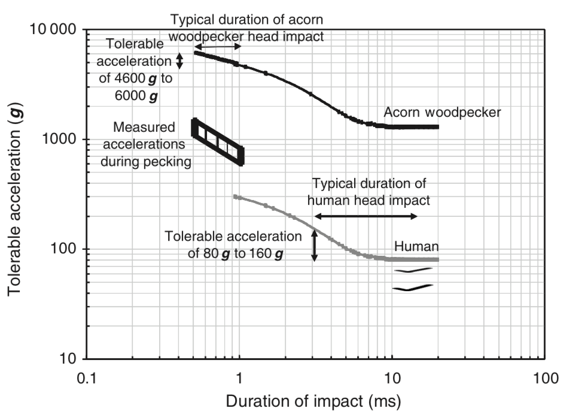
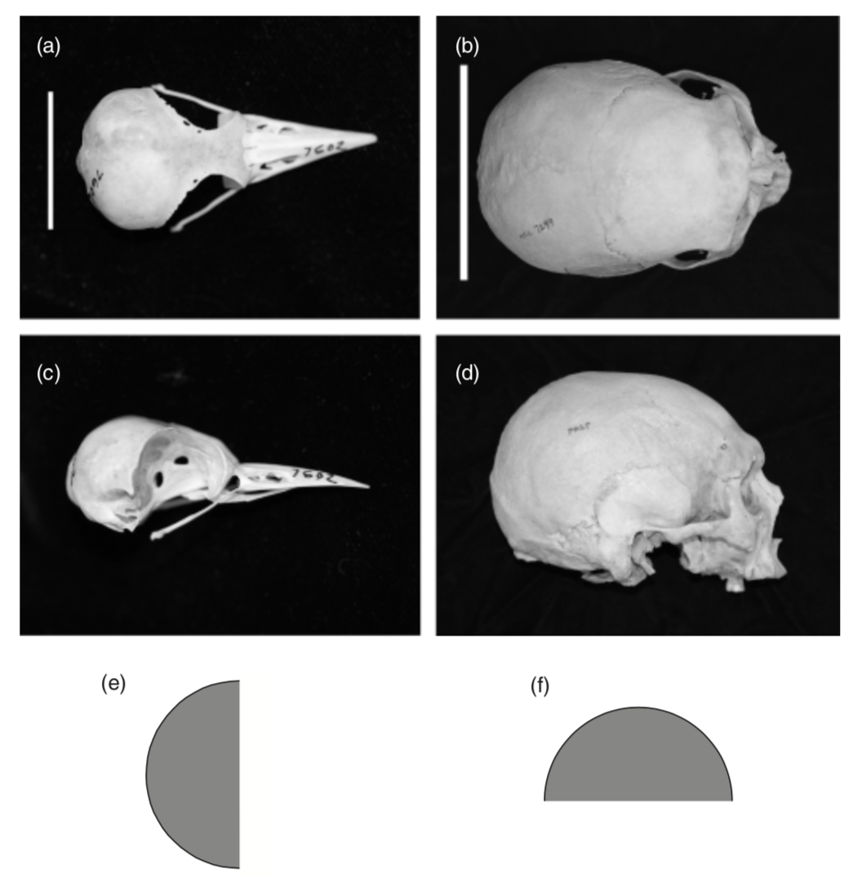

Woodpeckers are capable of repeated pecking on a tree at remarkably high decelerations (on the order of 1000g). In this paper, I re-examine previous studies of pecking and scaling effects in brain injury. I find that there are three keys to woodpeckers’ ability to withstand high decelerations: their small size, which reduces the stress on the brain for a given acceleration; the short duration of the impact, which increases the tolerable acceleration; and the orientation of the brain within the skull, which increases the area of contact between the brain and the skull.
Most woodpeckers drill holes into trees to forage for insects and their larvae. One group of woodpeckers, the sapsuckers, draws sap out of the holes they drill with the brush-like ends of their long tongues. The acorn woodpecker excavates larger holes to store individual acorns; social groups of acorn woodpeckers have been known to store more than 60000 acorns, each in its individual hole, in a dead tree trunk or limb, known as a granary
(Elphick, Dunning & Sibley, 2001) . All woodpeckers excavate cavity nests with a horizontal entry leading to an enlarged opening below it to lay their eggs. Woodpeckers drum on hollow branches, beating quickly and loudly, but less forcefully than during drilling, to attract a mate or to maintain their territory. With all of this drilling, excavating and drumming, how do woodpeckers avoid brain injury?
The most detailed study of woodpecker drilling beha- viour remains that of May et al. (1979) , who made high-speed films of an acorn woodpecker Melanerpes formicivorus pecking into a tree. (The bird, which was unable to fly as a result of injuries from a broken wing, lived in the office of a park ranger in California and would reliably peck on a tree trunk in the office when it heard the tapping of type- writer keys). Quantitative analysis of the film images showed that the woodpecker’s head moved forward in a straight trajectory, reaching maximum speeds of roughly , and decelerating at about on impact, in . The entire forward trajectory took between 8 and 25 ms.
The tolerance of the human head to impact depends on both the acceleration and the duration of that acceleration. The Japan Head Tolerance Curve, the lower curve in , shows the threshold combinations of impact acceleration and duration for concussion; accelerations above the curve cause concussion whereas those below do not (Ono et al., 1980 ; McLean & Anderson, 1997 ). For shorter impact durations, higher accelerations can be tolerated. Note that, for a 1 ms duration impact, the threshold acceleration for concussion in humans is about 300g: the human brain is injured at accelerations of about 1/5–1/2 of those routinely attained in repeated woodpecker drilling.
A number of suggestions have been made to explain the ability of woodpeckers to withstand the repeated impacts from drilling. The classic argument made in the ornithology literature focuses on an unusual feature of birds: cranial kinesis, or the ability to move the upper portion of the beak relative to the brain case. Bock (1964 , 1966 , 1999a ,b ) used a static analysis of the anatomical features of birds that give rise to cranial kinesis to show that, during pecking, the force of the impact is directed away from the dorsal portion of the brain case (which is lightly constructed) and towards the ventral base of the brain case (which consists of more massive bone), so that the brain itself is protected from the impact. This analysis appears to miss the dynamic effect: the brain itself accelerates during the impact. Bock (1999a ) does note that the brain may move forward and hit the inner wall of the skull if it is not firmly anchored in some way, possibly causing brain injury, and that there is little information on the morphological relationship of the brain to the brain case.

Simple scaling arguments indicate that small size is an advantage: as brain size decreases, the ratio of the brain mass to surface area decreases (assuming that the brain tissue density is similar across species), reducing the stress on the brain tissue associated with a given acceleration (May et al., 1979 ; Winkler, Christie & Nurney, 1995 ). I examine the scaling argument in more detail below.
The centripetal theory of concussion suggests that rotational, rather than translational, accelerations produce concussion (Holbourn, 1943 ; Ommaya et al., 1967 ; Ommaya & Hirsch, 1971 ), leading May et al. (1979) to argue that the straight-line trajectory protects the woodpecker from injury. However, later studies demonstrated that translational accelerations in non-human primates also lead to concussion (Ono et al., 1980) . In addition, the centripetal model predicts a progression of injury from cortex to subcortex to brain stem that does not always correspond to clinical observations of concussion (Shaw, 2002) . In light of these observations, the centripetal theory of concussion is no longer thought to be valid so that May’s argument, that the straight trajectory prevents brain injury in woodpeckers, is doubtful.
The convulsive theory proposes that concussion occurs when mechanical stresses produce depolarization in neurons. The brain of the woodpecker is tightly packed within the skull, and there is relatively little cerebrospinal fluid (May et al., 1976) . Shaw (2002) has proposed that the woodpecker avoids injury through the tight packing of the brain in the skull, which he suggests prevents rotation and mechanical stressing of the brain within the skull.
Various shock absorption mechanisms, involving the muscles attached at the rear end of the mandible (Bock, 1964 ; Spring, 1965 ; May et al., 1976 ) or those connected to the tongue, which wraps around the back of the head (May et al., 1976) , have been proposed. Yet all of these suffer from the difficulty that such shock absorption mechanisms work by increasing the duration of the impact, decreasing the force and, consequently, the efficiency of drilling (Bock, 1999a ).
Here, I re-examine scaling effects in brain injury to explain how woodpeckers are able to withstand such high decelerations during pecking. Studies of brain injury have shown that both rotational and translational accelerations lead to brain injury (Ommaya & Hirsch, 1971 ; Ono et al., 1980 ; McLean & Anderson, 1997 ). A. H. S. Holbourn (unpubl. data, cited by Ommaya et al., 1967 and Ommaya & Hirsch, 1971 ) proposed a scaling relationship that the tolerable rotational acceleration, , for a given duration of impact, for geometrically similar brains of similar properties (e.g. density, stiffness, strain threshold for injury) but different sizes, is inversely proportional to the 2/3 power of the mass, M, of the brains:
where subscripts 1 and 2 refer to brains of sizes 1 and 2. Tolerable accelerations can be defined either for a particular duration or as the asymptotic acceleration that does not cause injury at long durations. Equation (1) has been experimentally confirmed, using some approximations, in whiplash experiments on three species of non-human primates with brain masses ranging from 20 to 500 g (Ommaya & Hirsch, 1971 ). May et al. (1979) use Holbourn’s scaling relationship for rotational acceleration to suggest that woodpeckers (with brain masses between 1.25 and 3.95 g) should be 50–100 times less susceptible to concussion than humans (brain mass of 1400 g). However, May et al.’s (1979) high-speed film observations (up to 2000 frames s1) indicate that the trajectory of the acorn woodpecker is a straight-line translation rather than a rotation. Limited data from slower films (at 64 frames s1) suggest that the yellow- bellied sapsucker Sphyrapicus varius also made a straight-line trajectory during pecking whereas the black-backed woodpecker Picoides arcticus made a slightly rotational trajectory, with the entire body rotating as the pelvis rotated about the femoral head (Spring, 1965 ).
I next write a scaling relationship for the tolerable translational acceleration, a, of both woodpecker and human brains, for a given duration of impact. I assume that the properties, such as the density r, of the brain tissue are the same in both woodpeckers and humans. I note that both woodpecker and human brains are roughly hemispherical, but that they have different orientations within the skull ( ), so that the projected contact area, A_w, of the woodpecker brain against the skull is approximately pir_w^2 whereas that of the human brain, A_h, is (pir_w^2)/2, where r_w and rh are the radii of the woodpecker and human brains, respectively. Assuming that brain injury occurs at the same stress, sigma, in both the woodpecker and the human, then
or
where F is the force on the brain and subscripts w and h refer to woodpecker and human, respectively. The brain mass of the acorn woodpecker is about 2.5g (Mlikovsky, 1989 ) whereas that of a human is about 1400 g, suggesting that the ratio of the brain radii, r_w/r_h, is about 0.12 and that the translational acceleration the acorn woodpecker can with- stand without injury is 16 times that of a human (for a given duration of impact). The brain masses of a number of species of woodpeckers have been measured to range from 1.2 g (Dendrocopos minor) to 7.7 g (Dryocopus martius) (Mlikovsky, 1989 ), corresponding to tolerable accelerations of the woodpecker brain about 11–20 times that of the human brain (again, for a given duration of impact). Video imaging experiments measure head accelerations during impact rather than brain accelerations; I use the measured head accelerations as an indicator of the brain acceleration.

The maximum acceleration that the human head can withstand without brain injury depends on the duration of the acceleration. The lower curve in (adapted from Ono et al., 1980 ) shows a tolerance curve for human head impact: accelerations below the curve can be tolerated without concussion. A similar tolerance curve for the acorn woodpecker can be estimated using the scaling relationship equation (3) (the upper curve in ). In automobile crashes, the duration of the contact time between an unbelted vehicular occupant and a component of the vehicle is typically 3–7 ms (Ommaya, Goldsmith & Thibault, 2002 ). The duration of head impacts in National Football League players who suffer concussion is typically 15ms (Pellman et al., 2003 ). For this range of duration of human head impact (3–15 ms), the tolerable acceleration ranges from 80 g to 160 g. The duration of impact for the acorn woodpecker is remarkably short: 0.5–1.0 ms (May et al., 1979 ). The scaled tolerance curve for the acorn woodpecker suggests that for these short impact durations, the woodpecker head can tolerate translational accelerations of 4600 g–6000 g, well above the values of 634 g to 1525 g measured by May and his co-workers. As noted above, other species of woodpeckers, with somewhat smaller or larger brains, would be expected to tolerate accelerations of about 11/16 = 69% to 20/16=125% that of the acorn woodpecker (assuming that they, too, have similarly short durations of the impact).
The ability of woodpeckers to withstand high accelerations associated with drilling for food and excavating nests is due to three factors: their small size, which reduces the stress on the brain for a given acceleration; the short duration of the impact, which increases the tolerable acceleration; and the orientation of the brain within the skull, which increases the area of contact between the brain and the skull.
I am grateful to Professors Trey Crisco of the Department of Orthopaedics and Sharon Swartz of the Department of Ecology and Evolutionary Biology, both at Brown University, who commented on an earlier draft of this paper. I also appreciate early discussions with Professor Andy Biewener of the Department of Organismic and Evolutionary Biology at Harvard University. Mr Matt Dawson assisted with the preparation of . The photographs of the skulls in were kindly provided by Mr Jeremiah Trimble of the Ornithology Department of the Museum of Comparative Zoology, Harvard University, copyright President and Fellows of Harvard College.
Bock, W.J. (1964). Kinetics of the avian skull. J. Morph. 114, 1–42.
Bock, W.J. (1966). An approach to the functional analysis of bill shape. Auk 83, 10–51.
Bock, W.J. (1999a). Functional and evolutionary morphology of woodpeckers. Ostrich 70, 23–31.
Bock, W.J. (1999b). Cranial kinesis revisited. Zool. Anzeiger 238, 27–39.
Elphick, C., Dunning, J.B. & Sibley, D.A. (Eds). (2001). The Sibley guide to bird life and bird behavior. New York: Alfred A. Knopf.
Holbourn, A.H.S. (1943). Mechanics of head injuries. Lancet 242, 438–441.
May, P.R.A., Fuster, J.M., Haber, J. & Hirschman, A. (1979). Woodpecker drilling behaviour: an endorsement of the rotational theory of impact brain injury. Arch. Neurol. 36, 370–373.
May, P.R.A., Fuster, J.M., Newman, P.A. & Hirschman, A. (1976). Woodpeckers and head injury. Lancet 307, 454–455.
McLean, A.J. & Anderson, R.W.G. (1997). Biomechanics of closed head injury. Chapter 2. In Head injury: 25–37. Reilly, P. & Bullock, R. (Eds). London: Chapman & Hall.
Mlikovsky, J. (1989). Brain size in birds: 3. Columbiformes through Piciformes. Vestn. Cesk. Spol. Zool. 53, 252–264.
Ommaya, A.K. & Hirsch, A.E. (1971). Tolerances for cerebral concussion from head impact and whiplash in primates. J. Biomech. 4, 13–21.
Ommaya, A.K., Goldsmith, W. & Thibault, L. (2002). Biomechanics and neuropathology of adult and paediatric head injury. Br. J. Neurosurg. 16, 220–242.
Ommaya, A.K., Yarnell, P., Hirsch, A.E. & Harris, E.H. (1967). Scaling of experimental data on cerebral concussion in sub-human primates to concussion threshold for man. In Proceedings of the 11th Stapp car crash conference: 47–52. New York: Society of Automotive Engineers.
Ono, K., Kikuchi, A., Nakamura, M., Kobayashi, H. & Nakamura, N. (1980). Human head tolerance to sagittal impact: reliable estimation deduced from experimental head injury using subhuman primates and human cadaver skulls. In Proceedings of the 24th Stapp car crash conference: 101–160. Warrendale, PA: Society of Automotive Engineers.
Pellman, E.J., Viano, D.C., Tucker, A.M., Casson, I.R. & Waeckerle, J.F. (2003). Concussion in professional foot- ball: reconstruction of game impacts and injuries. Neurosurgery 53, 799–814.
Shaw, N.A. (2002). The neurophysiology of concussion. Prog. Neurobiol. 67, 281–344.
Spring, L.W. (1965). Climbing and pecking adaptations in some North American woodpeckers. Condor 67, 457–488.
Winkler, H., Christie, D.A. & Nurney, D. (1995). Woodpeckers: a guide to the woodpeckers of the world. Boston: Houghton Mifflin.